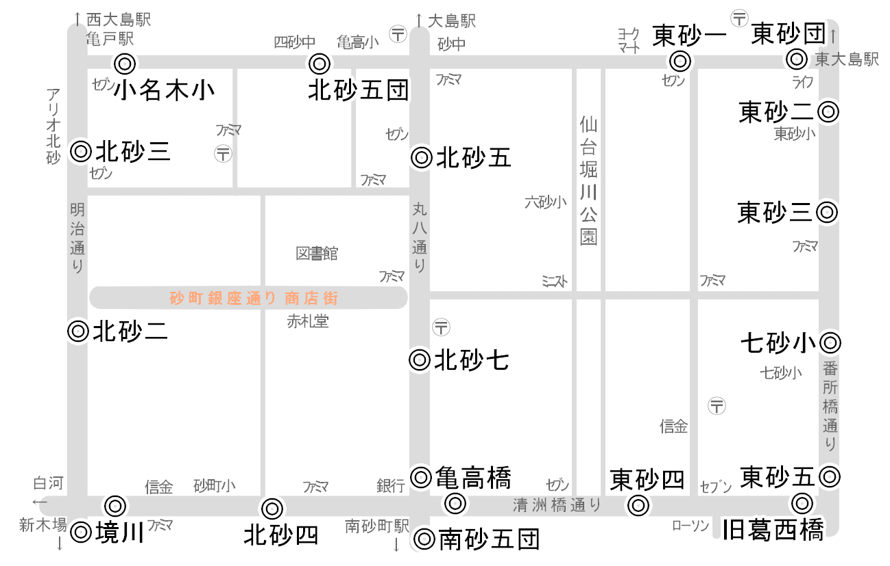

◎砂町エリアの主なバス停

- ※都バスの時刻表から作成しました。転記ミス等で間違いがある箇所もありますので、正確には都バス時刻表でご確認ください。
- ※間違いや分かりずらい箇所等がありましたら「お問い合わせ」からお知らせください。随時、修正し皆様に役に立つものにしていきたいと思います。
- ※出発時間・到着時間はスケジュール時間です。道路状況や悪天候等により大幅に遅れることがありますのでご注意ください。
- ※掲載しているものは行先が亀戸、錦糸町、両国、門仲・秋葉原方面及び有明・晴海方面で、近くや江戸川方面行きは掲載していません（今後掲載予定です）。
- ※終点までの主要バス停到着時間はそれぞれの運行系統でご確認ください。
●行先別一覧
| 行先（終点） | 運行系統 | バス停 | 備考 |
|---|---|---|---|
| 秋葉原駅 | ▶ 秋26 | 東砂六・旧葛西橋・東砂四・亀高橋・北砂四・境川 | ー |
| 大島駅前 | ▶ 亀21 | 東砂六・旧葛西橋・東砂四・亀高橋・北砂七・北砂五・北砂六 | ー |
| ▶ 亀24 | 東砂六・旧葛西橋・葛西橋・東砂六北・東砂五・第七砂町小・東砂三・東砂二 | ー | |
| 亀戸駅前（亀戸駅通り） | ▶ 急行05 | 境川・北砂二・北砂三 | 土休日のみ※錦糸町駅前行 |
| ▶ 都07 | 境川・北砂二・北砂三 | ※錦糸町駅前行 | |
| ▶ 亀21 | 東砂六・旧葛西橋・東砂四・亀高橋・北砂七・北砂五・北砂六 | ー | |
| ▶ 亀23 | 南砂五団地・亀高橋・北砂七・北砂五・北砂六・北砂五団地・小名木川小入口 | （循環） | |
| ▶ 亀24 | 東砂六・旧葛西橋・葛西橋・東砂六北・東砂五・第七砂町小・東砂三・東砂二 | ー | |
| ▶ 亀29 | 東砂六・旧葛西橋・東砂四・亀高橋・北砂四・境川・北砂二・北砂三 | ー | |
| ▶ 両28 | 東砂六（一部）・葛西橋・葛西橋・旧葛西橋・東砂四・亀高橋・北砂四・境川・北砂二・北砂三 | 本数少※両国駅前行 | |
| 木場駅前 | ▶ 門21 | 東砂二・東砂三・第七砂町小・東砂五・東砂六北・旧葛西橋・東砂四・亀高橋・南砂五団地 | ※門前仲町行 |
| ▶ 都07 | 境川・北砂二・北砂三 | ー | |
| 錦糸町駅前 | ▶ 急行05 | 境川・北砂二・北砂三 | 土休日のみ |
| ▶ 都07 | 境川・北砂二・北砂三 | ー | |
| ▶ 錦18 | 境川・北砂二・北砂三 | 平日のみ | |
| ▶ 錦28 | 東砂団地・東砂一・北砂六・北砂五団地・小名木川小入口 | ー | |
| ▶ 両28 | 東砂六（一部）・葛西橋・葛西橋・旧葛西橋・東砂四・亀高橋・北砂四・境川・北砂二・北砂三 | 本数少※両国駅前行 | |
| 国際展示場駅前 | ▶ 錦18 | 北砂三・北砂二・境川 | 平日のみ |
| 新木場駅前 | ▶ 急行05 | 北砂三・北砂二・境川 | 土休日のみ※日本科学未来館行 |
| ▶ 錦18 | 北砂三・北砂二・境川 | 平日のみ※国際展示場駅前行 | |
| 住吉駅前 | ▶ 錦28 | 東砂団地・東砂一・北砂六・北砂五団地・小名木川小入口 | ※錦糸町駅前行 |
| 東陽町駅前 | ▶ 都07 | 境川・北砂二・北砂三 | ※門前仲町行 |
| ▶ 陽20 | 東砂二・東砂三・第七砂町小・東砂五・東砂六北・旧葛西橋・東砂六 | ※本数少 | |
| ▶ 亀21 | 東砂六・旧葛西橋・東砂四・亀高橋・北砂七・北砂五・北砂六 | ー | |
| ▶ 門21 | 東砂二・東砂三・第七砂町小・東砂五・東砂六北・旧葛西橋・東砂四・亀高橋・南砂五団地 | ※門前仲町行 | |
| 西大島駅前 | ▶ 急行05 | 境川・北砂二・北砂三 | 土休日のみ※錦糸町駅前行 |
| ▶ 都07 | 境川・北砂二・北砂三 | ※錦糸町駅前行 | |
| ▶ 錦18 | 境川・北砂二・北砂三 | 平日のみ | |
| ▶ 錦28 | 東砂団地・東砂一・北砂六・北砂五団地・小名木川小入口 | ※錦糸町駅前行 | |
| ▶ 亀23 | 南砂五団地・亀高橋・北砂七・北砂五・北砂六・北砂五団地・小名木川小入口 | （循環） | |
| ▶ 亀24 | 東砂六・旧葛西橋・葛西橋・東砂六北・東砂五・第七砂町小・東砂三・東砂二 | ※亀戸駅前行 | |
| ▶ 亀29 | 東砂六・旧葛西橋・東砂四・亀高橋・北砂四・境川・北砂二・北砂三 | ※亀戸駅前行 | |
| ▶ 両28 | 東砂六（一部）・葛西橋・葛西橋・旧葛西橋・東砂四・亀高橋・北砂四・境川・北砂二・北砂三 | 本数少※両国駅前行 | |
| 日本科学未来館 | ▶ 急行05 | 北砂三・北砂二・境川 | 土休日のみ |
| 門前仲町 | ▶ 都07 | 境川・北砂二・北砂三 | ー |
| ▶ 門21 | 東砂二・東砂三・第七砂町小・東砂五・東砂六北・旧葛西橋・東砂四・亀高橋・南砂五団地 | ー | |
| 両国駅前 | ▶ 両28 | 東砂六（一部）・葛西橋・葛西橋・旧葛西橋・東砂四・亀高橋・北砂四・境川・北砂二・北砂三 | ※本数少 |
●バス停別一覧
| バス停 | 運行系統 | 終点 | 所要時間 | 備考 | 主なバス停 | 始点 |
|---|---|---|---|---|---|---|
| 小名木川小学校入口 | 亀23 | ▶ 亀戸駅前行 | 9 | 西大島駅前 | 江東高齢者医療センター | |
| 錦28 | ▶ 錦糸町駅前行 | 13 | 西大島駅前 住吉駅前 | 東大島駅前 | ||
| 亀高橋 | 亀21 | ▶ 亀戸駅前行 | 16 | 大島駅前 | 東陽町駅前 | |
| ▶ 東陽町駅前行 | 18 | 亀戸駅前 | ||||
| 門21 | ▶ 門前仲町行 | 31 | 27/土曜 24/休日 | 江東区役所前 東陽町駅前 木場駅前 | 東大島駅前 | |
| 亀23 | ▶ 亀戸駅前行 | 18 | 西大島駅前 | 江東高齢者医療センター | ||
| 秋26 | ▶ 秋葉原駅前行 | 47 | 41/土曜 34/休日 | 清澄白河駅前 水天宮前 人形町三丁目 神田駅前 | 葛西駅前 | |
| 両28 | ▶ 両国駅前行 | 36 | 34/土曜 30/休日 | 西大島駅前 亀戸駅通り 錦糸町駅前 | 臨海車庫 | |
| 亀29 | ▶ 亀戸駅前行 | 15 | 西大島駅前 | なぎさニュータウン | ||
| 北砂二丁目 | 急行05 | ▶ 錦糸町駅前行 | 13 | 西大島駅前 | 日本科学未来館 | |
| ▶ 日本科学未来館行 | 34 | 17/新木場駅前 | 新木場駅前 東京ビッグサイト駅前 | 錦糸町駅前 | ||
| 都07 | ▶ 錦糸町駅前行 | 13 | 西大島駅前 | 門前仲町 | ||
| ▶ 門前仲町行 | 21 | 東陽町駅前 木場駅前 | 錦糸町駅前 | |||
| 錦18 | ▶ 錦糸町駅前行 | 13 | 西大島駅前 | 国際展示場駅 | ||
| ▶ 国際展示場駅前行 | 32 | 22/新木場駅前 | 新木場駅前 | 錦糸町駅前 | ||
| 両28 | ▶ 両国駅前行 | 31 | 29/土曜 27/休日 | 西大島駅前 亀戸駅通り 錦糸町駅前 | 臨海車庫 | |
| 亀29 | ▶ 亀戸駅前行 | 10 | 西大島駅前 | なぎさニュータウン | ||
| 北砂三丁目 | 急行05 | ▶ 錦糸町駅前行 | 12 | 西大島駅前 | 日本科学未来館 | |
| ▶ 日本科学未来館行 | 35 | 18/新木場駅前 | 新木場駅前 東京ビッグサイト駅前 | 錦糸町駅前 | ||
| 都07 | ▶ 錦糸町駅前行 | 12 | 西大島駅前 | 門前仲町 | ||
| ▶ 門前仲町行 | 23 | 東陽町駅前 木場駅前 | 錦糸町駅前 | |||
| 錦18 | ▶ 錦糸町駅前行 | 12 | 西大島駅前 | 国際展示場駅 | ||
| ▶ 国際展示場駅前行 | 34 | 24/新木場駅前 | 新木場駅前 | 錦糸町駅前 | ||
| 両28 | ▶ 両国駅前行 | 29 | 27/土曜 25/休日 | 西大島駅前 亀戸駅通り 錦糸町駅前 | 臨海車庫 | |
| 亀29 | ▶ 亀戸駅前行 | 8 | 西大島駅前 | なぎさニュータウン | ||
| 北砂四丁目 | 秋26 | ▶ 秋葉原駅前行 | 46 | 40/土曜 33/休日 | 清澄白河駅前 水天宮前 人形町三丁目 神田駅前 | 葛西駅前 |
| 両28 | ▶ 両国駅前行 | 35 | 32/土曜 29/休日 | 西大島駅前 亀戸駅通り 錦糸町駅前 | 臨海車庫 | |
| 亀29 | ▶ 亀戸駅前行 | 14 | 西大島駅前 | なぎさニュータウン | ||
| 北砂五丁目 | 亀21 | ▶ 亀戸駅前行 | 13 | 大島駅前 | 東陽町駅前 | |
| ▶ 東陽町駅前行 | 21 | 亀戸駅前 | ||||
| 亀23 | ▶ 亀戸駅前行 | 15 | 西大島駅前 | 江東高齢者医療センター | ||
| 北砂五丁目団地 | 亀23 | ▶ 亀戸駅前行 | 10 | 西大島駅前 | 江東高齢者医療センター | |
| 錦28 | ▶ 錦糸町駅前行 | 14 | 西大島駅前 住吉駅前 | 東大島駅前 | ||
| 北砂六丁目 | 亀21 | ▶ 亀戸駅前行 | 12 | 大島駅前 | 東陽町駅前 | |
| ▶ 東陽町駅前行 | 22 | 亀戸駅前 | ||||
| 亀23 | ▶ 亀戸駅前行 | 13 | 西大島駅前 | 江東高齢者医療センター | ||
| 錦28 | ▶ 錦糸町駅前行 | 17 | 西大島駅前 住吉駅前 | 東大島駅前 | ||
| 北砂七丁目 | 亀21 | ▶ 亀戸駅前行 | 14 | 大島駅前 | 東陽町駅前 | |
| ▶ 東陽町駅前行 | 20 | 亀戸駅前 | ||||
| 亀23 | ▶ 亀戸駅前行 | 15 | 西大島駅前 | 江東高齢者医療センター | ||
| 旧葛西橋 | 陽20 | ▶ 東陽町駅前行 | 18 | 東大島駅前 | ||
| 亀21 | ▶ 亀戸駅前行 | 21 | 大島駅前 | 東陽町駅前 | ||
| ▶ 東陽町駅前行 | 15 | 亀戸駅前 | ||||
| 門21 | ▶ 門前仲町行 | 33 | 29/土曜 26/休日 | 江東区役所前 東陽町駅前 木場駅前 | 東大島駅前 | |
| 秋26 | ▶ 秋葉原駅前行 | 49 | 45/土曜 37/休日 | 清澄白河駅前 水天宮前 人形町三丁目 神田駅前 | 葛西駅前 | |
| 両28 | ▶ 両国駅前行 | 38 | 36/土曜 32/休日 | 西大島駅前 亀戸駅通り 錦糸町駅前 | 臨海車庫 | |
| 亀29 | ▶ 亀戸駅前行 | 17 | 西大島駅前 | なぎさニュータウン | ||
| 江東図書館入口 | 陽20 | ▶ 東陽町駅前行 | 14 | 東大島駅前 | ||
| 境川 | 急行05 | ▶ 錦糸町駅前行 | 14 | 西大島駅前 | 日本科学未来館 | |
| ▶ 日本科学未来館行 | 31 | 14/新木場駅前 | 新木場駅前 東京ビッグサイト駅前 | 錦糸町駅前 | ||
| 都07 | ▶ 錦糸町駅前行 | 14 | 西大島駅前 | 門前仲町 | ||
| ▶ 門前仲町行 | 20 | 東陽町駅前 木場駅前 | 錦糸町駅前 | |||
| 錦18 | ▶ 錦糸町駅前行 | 14 | 西大島駅前 | 国際展示場駅 | ||
| ▶ 国際展示場駅前行 | 29 | 19/新木場駅前 | 新木場駅前 | 錦糸町駅前 | ||
| 秋26 | ▶ 秋葉原駅前行 | 44 | 38/土曜 31/休日 | 西大島駅前 亀戸駅通り 錦糸町駅前 | 臨海車庫 | |
| 両28 | ▶ 両国駅前行 | 33 | 31/土曜 28/休日 | 西大島駅前 亀戸駅通り 錦糸町駅前 | 臨海車庫 | |
| 亀29 | ▶ 亀戸駅前行 | 12 | 西大島駅前 | なぎさニュータウン | ||
| 第七砂町小学校前 | 陽20 | ▶ 東陽町駅前行 | 21 | 東大島駅前 | ||
| 門21 | ▶ 門前仲町行 | 37 | 33/土曜 29/休日 | 江東区役所前 東陽町駅前 木場駅前 | 東大島駅前 | |
| 亀24 | ▶ 亀戸駅前行 | 20 | 東大島駅入口 大島駅 西大島駅 | 江戸川車庫 | ||
| 東砂一丁目 | 錦28 | ▶ 錦糸町駅前行 | 18 | 西大島駅前 住吉駅前 | 東大島駅前 | |
| 東砂二丁目 | 陽20 | ▶ 東陽町駅前行 | 23 | 東大島駅前 | ||
| 門21 | ▶ 門前仲町行 | 40 | 36/土曜 32/休日 | 江東区役所前 東陽町駅前 木場駅前 | 東大島駅前 | |
| 亀24 | ▶ 亀戸駅前行 | 17 | 東大島駅入口 大島駅 西大島駅 | 江戸川車庫 | ||
| 東砂三丁目 | 陽20 | ▶ 東陽町駅前行 | 22 | 東大島駅前 | ||
| 門21 | ▶ 門前仲町行 | 38 | 34/土曜 30/休日 | 江東区役所前 東陽町駅前 木場駅前 | 東大島駅前 | |
| 亀24 | ▶ 亀戸駅前行 | 18 | 東大島駅入口 大島駅 西大島駅 | 江戸川車庫 | ||
| 東砂四丁目 | 亀21 | ▶ 亀戸駅前行 | 19 | 大島駅前 | 東陽町駅前 | |
| ▶ 東陽町駅前行 | 16 | 亀戸駅前 | ||||
| 門21 | ▶ 門前仲町行 | 32 | 28/土曜 25/休日 | 江東区役所前 東陽町駅前 木場駅前 | 東大島駅前 | |
| 秋26 | ▶ 秋葉原駅前行 | 48 | 42/土曜 35/休日 | 西大島駅前 亀戸駅通り 錦糸町駅前 | 臨海車庫 | |
| 両28 | ▶ 両国駅前行 | 37 | 35/土曜 31/休日 | 西大島駅前 亀戸駅通り 錦糸町駅前 | 臨海車庫 | |
| 亀29 | ▶ 亀戸駅前行 | 16 | 西大島駅前 | なぎさニュータウン | ||
| 東砂五丁目 | 陽20 | ▶ 東陽町駅前行 | 20 | 東大島駅前 | ||
| 門21 | ▶ 門前仲町行 | 36 | 32/土曜 28/休日 | 江東区役所前 東陽町駅前 木場駅前 | 東大島駅前 | |
| 亀24 | ▶ 亀戸駅前行 | 20 | 東大島駅入口 大島駅 西大島駅 | 江戸川車庫 | ||
| 東砂六丁目 | 陽20 | ▶ 東陽町駅前行 | 17 | 東大島駅前 | ||
| 亀21 | ▶ 亀戸駅前行 | 23 | 大島駅前 | 東陽町駅前 | ||
| ▶ 東陽町駅前行 | 14 | 亀戸駅前 | ||||
| 秋26 | ▶ 秋葉原駅前行 | 52 | 46/土曜 39/休日 | 西大島駅前 亀戸駅通り 錦糸町駅前 | 臨海車庫 | |
| 亀29 | ▶ 亀戸駅前行 | 20 | 西大島駅前 | なぎさニュータウン | ||
| 東砂六丁目北 | 陽20 | ▶ 東陽町駅前行 | 19 | 東大島駅前 | ||
| 門21 | ▶ 門前仲町行 | 35 | 31/土曜 27/休日 | 江東区役所前 東陽町駅前 木場駅前 | 東大島駅前 | |
| 東砂団地 | 錦28 | ▶ 錦糸町駅前行 | 20 | 西大島駅前 住吉駅前 | 東大島駅前 | |
| 福島橋南詰 | 門21 | ▶ 門前仲町行 | 26 | 24/土曜 21/休日 | 江東区役所前 東陽町駅前 木場駅前 | 東大島駅前 |
| 南砂三丁目みどり団地前 | 陽20 | ▶ 東陽町駅前行 | 12 | 東大島駅前 | ||
| 亀23 | ▶ 亀戸駅前行 | 21 | 西大島駅前 | |||
| 南砂四丁目住宅 | 門21 | ▶ 門前仲町行 | 28 | 25/土曜 22/休日 | 江東区役所前 東陽町駅前 木場駅前 | 東大島駅前 |
| 南砂五丁目団地 | 門21 | ▶ 門前仲町行 | 29 | 26/土曜 23/休日 | 江東区役所前 東陽町駅前 木場駅前 | 東大島駅前 |